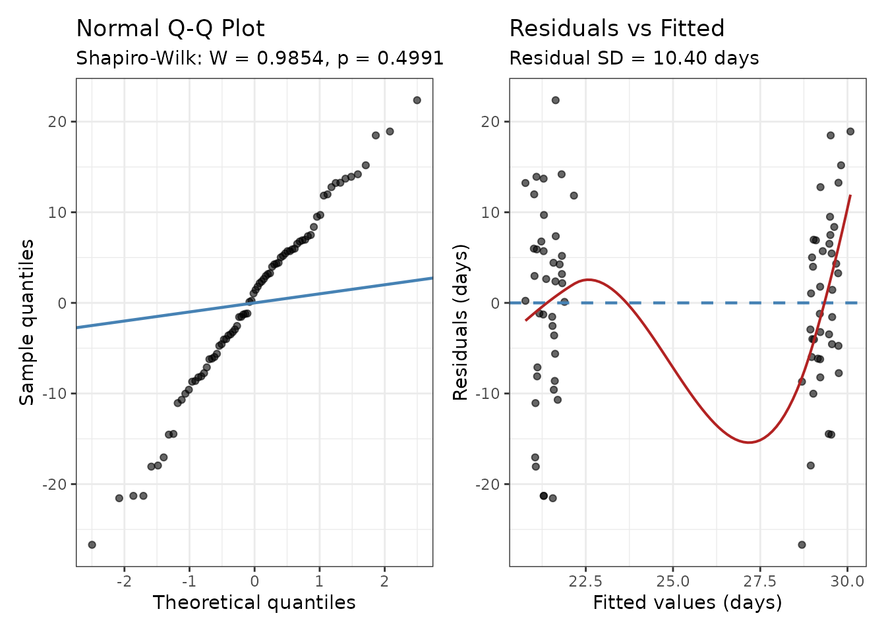

Linear Mixed Models for Wait-Time Analysis
Source:vignettes/linear-mixed-models.Rmd
linear-mixed-models.Rmd
library(mysterycall)
library(lme4) # required for model fitting
library(lmerTest) # recommended — Satterthwaite p-values
library(generics) # for tidy()1. When to use LMM vs. Poisson/NB GLMM
Mystery-caller studies collect wait times as counts of days from the call date to the offered appointment date. Two model families cover most scenarios:
| Situation | Recommended model |
|---|---|
| Wait days roughly symmetric, no strong floor at 0 | mysterycall_lmm() |
| Outcome right-skewed (many short waits, long tail) |
mysterycall_lmm() with auto_log = TRUE
(default) |
| Many zeroes or extreme right-skew |
mysterycall_poisson_model() or
mysterycall_nb_model()
|
| Binary outcome (accepted/not accepted) | mysterycall_logistic_model() |
The function itself diagnoses the distribution automatically:
-
Skewness > 1 and outcome ≥ 0:
auto_log = TRUE(default) applieslog1p(wait_days)before fitting, and back-transforms results to geometric mean ratios (GMRs) for reporting. -
Shapiro-Wilk p < 0.05 on residuals: a warning is
issued and, when
sensitivity_poisson = "auto"(default), a Poisson GLMM is run alongside the LMM as a robustness check.
2. Simulated data
The examples below use a synthetic dataset resembling a two-wave mystery-caller study comparing Medicaid and commercial insurance patients across 20 physician practices.
set.seed(42)
n_physicians <- 20
n_calls <- 4 # calls per physician (2 insurance types × 2 call dates)
sim_data <- data.frame(
physician = rep(paste0("Dr", sprintf("%02d", 1:n_physicians)), each = n_calls),
insurance = rep(c("Medicaid", "Medicaid", "BCBS", "BCBS"), n_physicians),
wave = rep(c("Wave1", "Wave2", "Wave1", "Wave2"), n_physicians),
# Medicaid callers wait ~8 days longer on average
wait_days = round(pmax(0,
rnorm(n_physicians * n_calls,
mean = ifelse(rep(c(TRUE, TRUE, FALSE, FALSE), n_physicians), 29, 21),
sd = 10)
)),
stringsAsFactors = FALSE
)
# Add a business-days column (≈ 5/7 of calendar days)
sim_data$business_days <- round(sim_data$wait_days * 0.71)
head(sim_data)
#> physician insurance wave wait_days business_days
#> 1 Dr01 Medicaid Wave1 43 31
#> 2 Dr01 Medicaid Wave2 23 16
#> 3 Dr01 BCBS Wave1 25 18
#> 4 Dr01 BCBS Wave2 27 19
#> 5 Dr02 Medicaid Wave1 33 23
#> 6 Dr02 Medicaid Wave2 28 203. Fitting a basic LMM
fit <- mysterycall_lmm(
data = sim_data,
outcome = "wait_days",
predictors = c("insurance", "wave"),
random_intercept = "physician"
)
#> Fitting LMM: wait_days ~ insurance + wave + (1 | physician)
#> Model fitted: n=80, physicians=20, AIC=600.2, sigma=10.40, R2m=0.128, R2c=0.136print() produces a structured report:
print(fit)
#> Linear Mixed Model (REML) n = 80 physicians = 20
#> AIC = 600.2 BIC = 612.1 Residual SD = 10.40 days
#> R^2 marginal = 0.128 conditional = 0.136
#> Normality: Residuals consistent with normality (p >= 0.05).
#> Reference levels: insurance='BCBS', wave='Wave1'
#>
#> Fixed effects (days):
#> term estimate se ci_lower ci_upper p-value
#> (Intercept) 21.66 2.03 17.62 25.70 < 0.001
#> insuranceMedicaid 7.93 2.33 3.27 12.58 0.001
#> waveWave2 -0.53 2.33 -5.18 4.13 0.822
#>
#> Random intercept (physician): variance = 1.0448 SD = 1.0221 daysKey elements of the returned object:
# Fixed-effect table in days (or log-scale if auto_log triggered)
fit$coef_table
#> # A tibble: 3 × 9
#> term estimate se t_value df p_value p_value_fmt ci_lower ci_upper
#> <chr> <dbl> <dbl> <dbl> <dbl> <dbl> <chr> <dbl> <dbl>
#> 1 (Intercep… 21.7 2.03 10.7 73.4 1.28e-16 < 0.001 17.6 25.7
#> 2 insurance… 7.93 2.33 3.41 58.0 1.19e- 3 0.001 3.27 12.6
#> 3 waveWave2 -0.525 2.33 -0.226 58.0 8.22e- 1 0.822 -5.18 4.13
# Model fit: R-squared, ICC, sigma
list(
marginal_R2 = fit$r_squared$marginal,
conditional_R2 = fit$r_squared$conditional,
sigma = fit$sigma,
n_obs = fit$n,
n_physicians = fit$n_clusters
)
#> $marginal_R2
#> [1] 0.127619
#>
#> $conditional_R2
#> [1] 0.1359681
#>
#> $sigma
#> [1] 10.39821
#>
#> $n_obs
#> [1] 80
#>
#> $n_physicians
#> [1] 20
# Normality of residuals
fit$normality
#> $statistic
#> [1] 0.9854161
#>
#> $p_value
#> [1] 0.4990939
#>
#> $interpretation
#> [1] "Residuals consistent with normality (p >= 0.05)."
#>
#> $method
#> [1] "Shapiro-Wilk"4. Auto-log transform and geometric mean ratios
When wait times are right-skewed, auto_log = TRUE (the
default) applies log1p(wait_days) before fitting. A message
indicates whether the transform was triggered. When it is, coefficients
are on the log scale and fit$log_transformed is
TRUE.
fit$log_transformed
#> [1] FALSEIf auto_log did trigger, interpret results from
$gmr_table rather than $coef_table:
if (isTRUE(fit$log_transformed)) {
fit$gmr_table
} else {
message("auto_log did not trigger; use $coef_table directly.")
}
#> auto_log did not trigger; use $coef_table directly.How to report GMRs: A GMR of 0.87 for
insuranceMedicaid means Medicaid callers wait, on average,
13% fewer days (× (days + 1)) than the BCBS reference group (GMR = 0.87,
95% CI 0.75–1.01, p = 0.07).
When auto_log did not trigger, interpret
coef_table directly in days: “Medicaid callers waited 8.2
days longer than BCBS callers (β = 8.2, 95% CI 3.1–13.3, p =
0.002).”
5. Poisson sensitivity analysis
By default (sensitivity_poisson = "auto"), a Poisson
GLMM is run on the original untransformed outcome
whenever the Shapiro-Wilk test on LMM residuals returns p < 0.05.
# Force a sensitivity run regardless of normality
fit_sens <- mysterycall_lmm(
data = sim_data,
outcome = "wait_days",
predictors = c("insurance", "wave"),
random_intercept = "physician",
sensitivity_poisson = TRUE
)
#> Fitting LMM: wait_days ~ insurance + wave + (1 | physician)
#> Warning: Overdispersion detected (phi = 3.72 > 1.50). Standard errors may be
#> underestimated. Consider a negative binomial model.
#> Model fitted: n=80, physicians=20, AIC=600.2, sigma=10.40, R2m=0.128, R2c=0.136
# Inspect the Poisson IRR table
if (!is.null(fit_sens$sensitivity)) {
fit_sens$sensitivity$irr_table
}
#> # A tibble: 3 × 9
#> term estimate se z_value p_value p_value_fmt irr ci_lower ci_upper
#> <chr> <dbl> <dbl> <dbl> <dbl> <chr> <dbl> <dbl> <dbl>
#> 1 (Interc… 3.06 0.0572 53.6 0 < 0.001 21.4 19.1 23.9
#> 2 insuran… 0.315 0.0450 7.01 2.41e-12 < 0.001 1.37 1.25 1.50
#> 3 waveWav… -0.0207 0.0444 -0.466 6.41e- 1 0.641 0.980 0.898 1.07Report the sensitivity Poisson model in a supplemental table alongside the primary LMM. Consistent direction of effects (same sign across both models) supports robustness of the conclusion.
6. Broom-compatible tidy() method
The tidy() generic (from the generics
package) returns a tidy tibble of fixed-effect estimates, making it easy
to pipe into ggplot2 or gt:
tidy_result <- tidy(fit)
tidy_result
#> # A tibble: 3 × 8
#> term estimate std.error statistic df p.value conf.low conf.high
#> <chr> <dbl> <dbl> <dbl> <dbl> <dbl> <dbl> <dbl>
#> 1 (Intercept) 21.7 2.03 10.7 73.4 1.28e-16 17.6 25.7
#> 2 insuranceMedic… 7.93 2.33 3.41 58.0 1.19e- 3 3.27 12.6
#> 3 waveWave2 -0.525 2.33 -0.226 58.0 8.22e- 1 -5.18 4.137. Calendar vs. business-day sensitivity
To satisfy the M&M promise of a supplemental table comparing
calendar-day and business-day wait times, use
mysterycall_calendar_sensitivity():
sens <- mysterycall_calendar_sensitivity(
data = sim_data,
calendar_col = "wait_days",
business_col = "business_days",
predictors = c("insurance", "wave"),
random_intercept = "physician",
ref_label = "BCBS (commercial)",
supp_table_num = "S2"
)
#> Fitting calendar-days model (wait_days)...
#> Fitting business-days model (business_days)...The comparison table:
sens$summary_table
#> Term Calendar days Business days
#> 1 insuranceMedicaid 7.9 (3.3 to 12.6), p = 0.001 5.7 (2.4 to 9), p = 0.001
#> 2 waveWave2 -0.5 (-5.2 to 4.1), p = 0.822 -0.5 (-3.8 to 2.8), p = 0.775
#> Consistent
#> 1 Yes
#> 2 YesWhether all term directions are consistent across both measurement approaches:
sens$all_consistent
#> [1] TRUEThe ready-to-paste supplemental paragraph:
cat(sens$paragraph)
#> As a pre-specified sensitivity analysis, we repeated the secondary wait-time analysis substituting business days (Monday through Friday, excluding the 11 U.S. federal holidays) for calendar days. Business days were computed using the R package \emph{bizdays} with a US Federal holiday calendar. The calendar-day model included 80 observations with a recorded appointment date; the business-day model included 80 observations. Both models used the same mixed-effects linear regression specification (insurance and wave as fixed effect compared with BCBS (commercial) (reference); physician practice as random intercept). Results were directionally consistent across both metrics for all comparisons. Business-day estimates were on average 81% of calendar-day estimates (median ratio = 0.81), consistent with the expected 5/7 weekday fraction. Shapiro-Wilk normality tests on model residuals: calendar-day model: W = 0.985, p = 0.499; business-day model: W = 0.987, p = 0.595. Full results are presented in Supplemental Table S2.8. Diagnostic plots
plot() dispatches on the mysterycall_lmm
class to produce Q-Q and residual-vs-fitted plots:
plot(fit)
A well-specified LMM shows:
- Q-Q plot: points close to the diagonal reference line.
- Residuals vs. fitted: no strong pattern; spread roughly constant.
If the Q-Q plot shows a pronounced right tail, the
auto_log transform or a Poisson/NB GLMM is warranted.
9. Model comparison
Fit two models with REML = FALSE for valid AIC-based
comparison:
fit_full <- mysterycall_lmm(sim_data, "wait_days",
c("insurance", "wave"), "physician",
REML = FALSE)
#> Fitting LMM: wait_days ~ insurance + wave + (1 | physician)
#> Model fitted: n=80, physicians=20, AIC=609.4, sigma=10.22, R2m=0.132, R2c=0.136
fit_reduced <- mysterycall_lmm(sim_data, "wait_days",
"insurance", "physician",
REML = FALSE)
#> Fitting LMM: wait_days ~ insurance + (1 | physician)
#> Model fitted: n=80, physicians=20, AIC=607.4, sigma=10.23, R2m=0.131, R2c=0.136
data.frame(
model = c("Full (insurance + wave)", "Reduced (insurance only)"),
AIC = c(fit_full$aic, fit_reduced$aic),
BIC = c(fit_full$bic, fit_reduced$bic)
)
#> model AIC BIC
#> 1 Full (insurance + wave) 609.3901 621.3003
#> 2 Reduced (insurance only) 607.4428 616.9709Lower AIC/BIC favours the more parsimonious model. Use
mysterycall_model_comparison_table() for a print-ready
table.
10. Reporting checklist
When writing up an LMM analysis from a mystery-caller study:
-
Sample: report
fit$ncomplete cases andfit$n_clustersphysicians. -
Model form: “We fitted a linear mixed model with a
random intercept for physician practice (
lme4::lmer).” -
P-values: “Denominator degrees of freedom were
estimated using the Satterthwaite approximation
(
lmerTest).” -
Transform: if
fit$log_transformed, report GMRs with 95% CI from$gmr_table. If not, report β (days) from$coef_table. -
Normality: report Shapiro-Wilk W and p from
fit$normality. - R²: report marginal and conditional R² (Nakagawa & Schielzeth 2013).
-
Sensitivity: if
sensitivity_poissonran, cite the Poisson IRR table in a supplemental section (usemysterycall_calendar_sensitivity()to generate the paragraph automatically).
References
Nakagawa S, Schielzeth H (2013). A general and simple method for obtaining R² from generalized linear mixed-effects models. Methods in Ecology and Evolution 4(2):133–142. doi:10.1111/j.2041-210x.2012.00261.x
Asplin BR, Rhodes KV, Levy H, et al. (2005). Insurance status and access to urgent ambulatory care follow-up appointments. JAMA 294(10):1248–1254. doi:10.1001/jama.294.10.1248